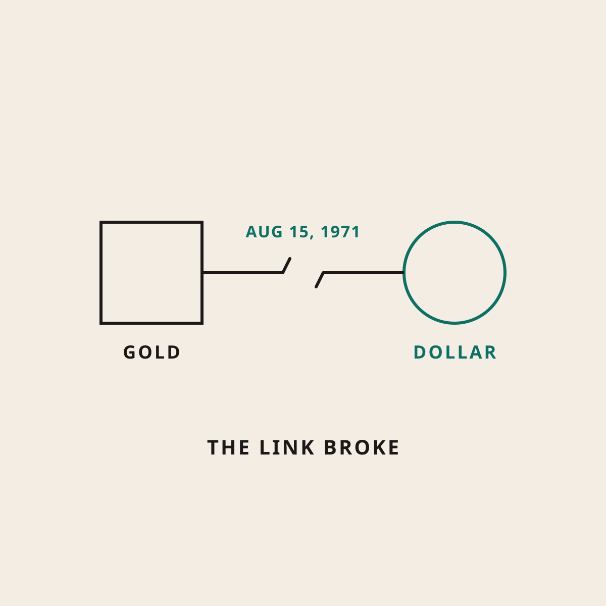

What Happened in 1971, and Why Your Grocery Bill Remembers
The night the dollar's last tie to gold was cut, in plain English.
On August 15, 1971, President Nixon cut the last official tie between the U.S. dollar and gold. Before that, foreign governments could trade their dollars for gold at a fixed price. After that, the dollar was backed by trust in the government and nothing else, and there was no hard limit on how many could be made. That's a big part of why a dollar buys so much less today than it did then.

If you've ever wondered why your parents talk about prices like they lived in a different country, a lot of it goes back to one TV speech in 1971. Here's the plain version.
The short answer
After World War II, the big countries agreed to a system for trading money. People call it the Bretton Woods system, after the place where it was agreed. Under it, the U.S. dollar was tied to gold at $35 an ounce. Foreign governments holding dollars could bring them to the U.S. and swap them for gold at that price.
That swap was a leash. The U.S. couldn't make unlimited dollars, because other countries could show up and ask for the gold.
By the late 1960s, the U.S. was creating more dollars than it had gold to back them. Other countries noticed and started asking for their gold. On August 15, 1971, Nixon went on TV and shut the gold window. Dollars could no longer be traded for gold, and they haven't been since.
The coat check ticket
Think about a coat check at a wedding. You hand over your coat and get a little ticket. The ticket isn't worth anything by itself. It's worth something because you can trade it back for your coat.
Now imagine the coat check quietly stops giving coats back. The tickets still get passed around. People still accept them, because everybody else does. But nothing stops the coat check from printing more tickets whenever it wants, and each new ticket makes all the others worth a little less.
That's roughly what happened to the dollar in 1971. Before, it was a ticket you could, in theory, trade for something real. After, it was a ticket backed by trust in the government. Trust is worth a lot. It just doesn't come with a limit on how many tickets get printed.
Why your grocery bill remembers
When more dollars exist, each one tends to buy a little less. That slow slide is inflation, and I covered it in the dollar's slow leak.
What changed in 1971 is that the brake was gone. Since then, prices have mostly climbed, sometimes slowly and sometimes fast. And the new money doesn't reach everyone at once. People closest to it, like big banks and those with lots of assets and cheap loans, tend to get it first. That's the story in who gets the new money first.
For a regular family, it shows up in the cart. Same groceries, bigger total. Your paycheck may have grown, but it has to run to keep up, which is why so many people feel like their raise vanished.
If you like charts, River publishes research pages that track this, including one on how much buying power the world's government money has lost since 1971 and one on inflation since 1970. They're worth a look. I won't repeat their numbers here, because charts tell it better than I can.
Where bitcoin fits
This is the part of the story that got me interested in bitcoin. Bitcoin has a fixed limit. There will only ever be 21 million, and no person or government can decide to make more. It's a ticket with a hard cap on the printing press.
That doesn't make it a sure thing. It's just a different design, and I think it's worth understanding. More on that in what scarce means for your money.
The honest part
The gold system wasn't perfect, and plenty of smart economists think ending it was the right call. Prices also rise for lots of reasons besides money printing, like supply problems and wars. 1971 is a big piece of the story, not the whole story.
And bitcoin isn't a fix you can count on. Its price swings hard and has stayed down for years at a time. A fixed supply doesn't promise anyone a return. If you buy any, use only money you can leave alone.
Questions I get about this
What exactly happened on August 15, 1971?
President Nixon announced the U.S. would stop trading gold for dollars held by foreign governments. That ended the system that had tied the dollar to gold at $35 an ounce since the end of World War II.
Could I trade my dollars for gold before 1971?
Not as a regular person. River's lesson describes the swap as something foreign governments could do with their dollar reserves. But that promise is what kept the whole system in check.
Is inflation all because of 1971?
No. Prices rise for many reasons. But 1971 removed the hard limit on making new dollars, and that's a big reason the dollar buys so much less than it used to.
Want to save a little in something with a fixed supply? Open a River account with my link (opens in a new tab). It's an affiliate link: when you buy your first $100, we each get $5 in bitcoin, then $15 more each at $1,000 and $80 more each at $10,000, up to $100 apiece. River isn't available in every state.
Bitcoin's price swings hard and can stay down for years, so only use money you can leave alone. I publish exactly what I earn. Nothing here is financial, tax, or legal advice. I'm a regular guy who did the homework, sharing what I learned. You make your own calls.
Sources
Where I checked the numbers and claims in this post.
- What happened in 1971? (River Learn) (opens in a new tab) the history of the gold link, why it ended, and what changed after.
- What is inflation? (River Learn) (opens in a new tab) River's plain lesson on why prices rise.
- River research (opens in a new tab) charts and reports, including buying power of government money since 1971 and inflation since 1970.

Written by David Dewese
Normal guy with a full-time job, wife, and kids. Spent twenty years pursuing music and creative ventures before starting a family. Sharing tips and tricks on how to thrive while living on an artist's income. Not a financial advisor. More about me.
New here?
Normaltown USA is plain-English money and healthcare help for normal people, written by a regular guy with a family of four. No jargon, no hype. Start here, or read the FAQ.